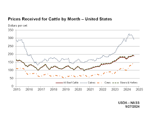

The cattle market refers to the buying and selling of cattle for beef production, dairy farming, and breeding purposes. It is a key component of the agricultural economy, involving various stakeholders such as farmers, ranchers, feedlots, meat packers, and traders. Cattle can be sold at different stages of life, from calves to fully grown steers or heifers, and the market is influenced by factors like supply and demand, feed costs, weather conditions, and global trade. Prices fluctuate based on the availability of cattle, consumer preferences, and the overall health of the livestock population. In addition, the cattle market is often affected by broader economic trends, such as fuel costs, labor shortages, and trade policies that impact exports and imports of beef. The market can be volatile, and producers must adapt to changing conditions to remain profitable.
